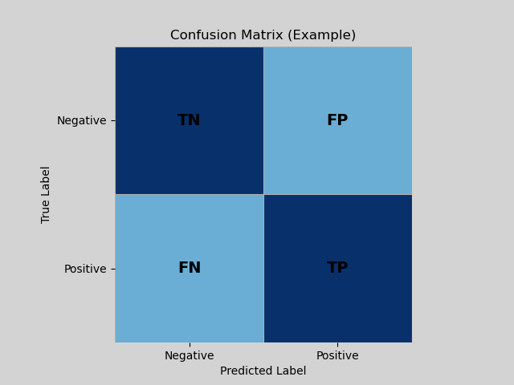

Machine Learning Terminology & Metrics
This section intends to be short guide to the metrics and terminology used aimed at making interpreting the results as easy and understandable as possible.
Machine Learning Metrics:
Confusion Matrix Metrics:
True Positive (TP): The number of times the model correctly predicts the positive (1) class.
True Negative (TN): The number of times the model correctly predicts the negative (0) class.
False Positive (FP): The number of times the model incorrectly predicts the positive (1) class. Also known as a Type I error.
False Negative (FN): The number of times the model incorrectly predicts the negative (0) class. Also known as a Type II error.
These metrics all together form the confusion matrix has seen below:

From the confusion matrix, Accuracy, Precision, and Recall are able to be calculated.
Accuracy (Acc):
Accuracy is simply the number of correct predictions divided by the total number of predictions. It provides a high level overview of a model's performance but struggles with
meaningfully conveying problems caused by class imbalances (Un-even distribution of data; ex: 75% of data is labeled 0 while only 25% of data labeled 1) or asymmetrical costs
(predicting a 0 incorrectly is worse than predicting a 1 incorrectly; ex: Medical data or my convoy problem)
Formula:
\[
\text{Accuracy} = \frac{\text{# correct predictions}}{\text{# total predictions}}
\;\; \text{or} \;\;
\text{Accuracy} = \frac{TP + TN}{TP + TN + FP + FN}
\]
Precision:
Calculates all of the model's positive prediction that were correct. The higher the precision, the fewer false positives.
Formula:
\[
\text{Precision}_1 = \frac{TP}{TP + FP}
\]
Precision for class 0:
\[
\text{Precision}_0 = \frac{TN}{TN + FN}
\]
Precision together (macro average):
\[
\text{Precision}_{\text{macro}} = \frac{\text{Precision}_0 + \text{Precision}_1}{2}
\]
Recall:
Calculates all of the model's negative predictions that were correct. The higher the recall, the fewer the false negatives.
Formula:
\[
\text{Recall}_1 = \frac{TP}{TP + FN}
\]
Recall for class 0:
\[
\text{Recall}_0 = \frac{TN}{TN + FP}
\]
Recall together (macro average):
\[
\text{Recall}_{\text{macro}} = \frac{\text{Recall}_0 + \text{Recall}_1}{2}
\]
Threshold:
Binary classification models do not output the actual labels of a class (no risk vs risk) but a score or probability \( P(y=1 \mid x) = 0.00 \;\; \text{to} \;\; 1.00 \).
It is for this reason why binary classification labels are defined as 0 or 1 during data preprocessing. The threshold is the cutoff for predicting either positive or negative.
Threshold defaults to 0.50 where any output below 0.50 is predicted as negative and any output above 0.50 is predicted as positive. Threshold can be changed manually to change
how cautious or aggressive a model performs but this does not change the models score/probability outputs. Therefore, lowering the threshold will increase recall but decrease
precision and vice versa for rasing the threshold.
Receiver Operating Characteristic Area Under Curve (ROC_AUC):
Based off the ROC Curve, the ROC_AUC is the area under said curve. Formally, it measures the probability that the classifier will give a randomly chosen positive gets
a higher score than a randomly chosen negative. ROC_AUC close to one indicates the model can effectively distinguish between the positive and negative class, ROC_AUC close
to 0 indicates the model struggles to differentiate between the two classes, and a ROC_AUC around 0.50 indicates the model is doing random guessing.
Matthews Correlation Coefficient (MCC):
The MCC measures correlation between predictions and truth using all confusion matrix values. It differs from accuracy by penalizing False Positives and False Negatives
strongly and is more robust to class imbalances. MCC of 1 indicates perfect prediction, MCC of 0 indicates random prediction, and MCC of -1 indicates perfectly wrong prediction
Formula:
\[
\text{MCC} = \frac{TP \cdot TN - FP \cdot FN}{\sqrt{(TP + FP)(TP + FN)(TN + FP)(TN + FN)}}
\]
Balanced Accuracy (Bal_Acc):
Aims to relive the issues class imbalances can have on Accuracy by giving each class equal weight. Calculated with the Recall scores for the 0 and 1 score to test
if the model can perform well on both classes. Ignores Precision.
Formula:
\[
\text{Balanced Accuracy} = \frac{\text{Recall}_0 + \text{Recall}_1}{2}
\]
Where:
\[
\text{Recall}_0 = \frac{TN}{TN + FP}
\qquad
\text{Recall}_1 = \frac{TP}{TP + FN}
\]
F1-Score (F1_1):
Measures the Precision-Recall tradeoff for the positive class or the harmonic mean between the two. If either Precision or Recall is low, F1 collapses creating a solid balance
between the two metrics. Ignores True Negatives.
Formula:
\[
\text{F1} = 2 \cdot \frac{\text{Precision}_1 \cdot \text{Recall}_1}{\text{Precision}_1 + \text{Recall}_1}
\]